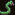

|
General info:
Succubi - PetsSummoning creaturesThe creatures described here can be acquired at the summoning circle in exchange of various items, mainly souls (obtained either by butchering or by running the gathering soul reaction as the Soul Well). Some of those creature are not tame whan summoned. This means that they will act friendly, but cannot be trained or assigned to an owner until tamed.In order to tame a creature, you must build an empty cage. Then you must design an activity area over it (i) and activate the 'animal training' activity. Put the creature inside the cage then assign it a trainer on the animals screen (z then enter). Once tame, you can free the creature by linking the cage to a lever and pull it. Be warned that the creature may turn hostile if it forget its training. Hopefully the succubi learn the training job at a fast rate to compensate this extra job. In any case, not training a creature still allow to complete any role that is not associated to one particular inhabitant of your fort. The succubi and the pets are immune to each other's syndromes, so friendly fire will not be an issue. One thing to note that there is an unfixable bug concerning caravan, all slaver merchants (Orcs, Drows, Goblin, Succubi) will 'kidnap' the pets they bring. You will be spammed by kidnapping messages but no creature of your fort will be lost. However, this means that sold creatures will not count towards your exports. If you wish to raise wealth, you will be better off butchering valuable beasts to make crafts. The petsThese common creatures can be bought from caravans or the embark screen. Nahash - Hunts vermin, adopts owner, lay eggs (female) ::: Price: 101 :::These snakes are cheap vermin hunters who will prevent related bad thoughts. They can not defend well in a fight and is the genral equivalent to cats in a dwarven fort, with the exception that females also produce eggs.
These human faced rats will also hunt vermin in your fort. They also
have the ability to teleport towards visible enemies for a suprise
attack. Combined to the fact that they are cheap to summon, you can
unleash a horde of biting rats from safety. |